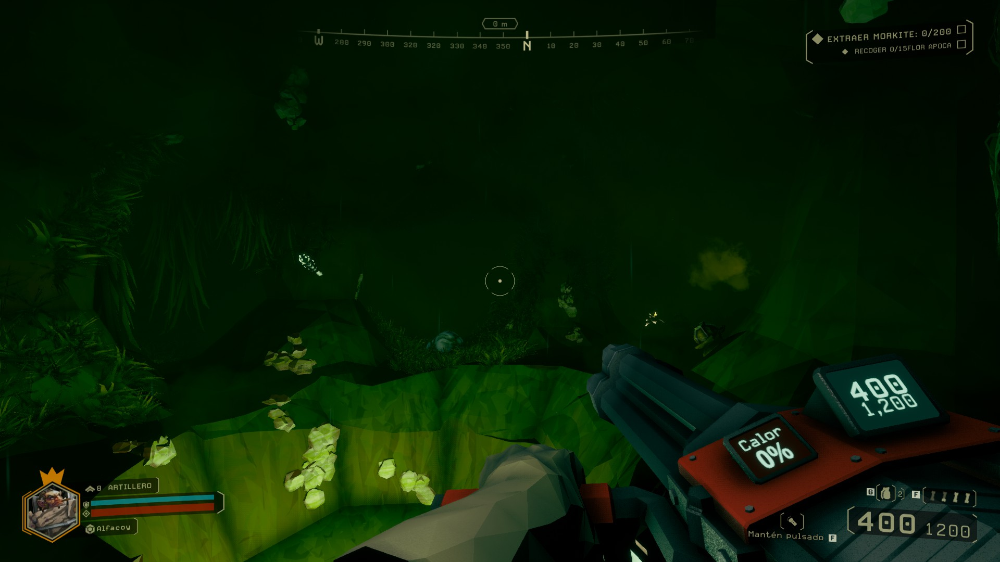
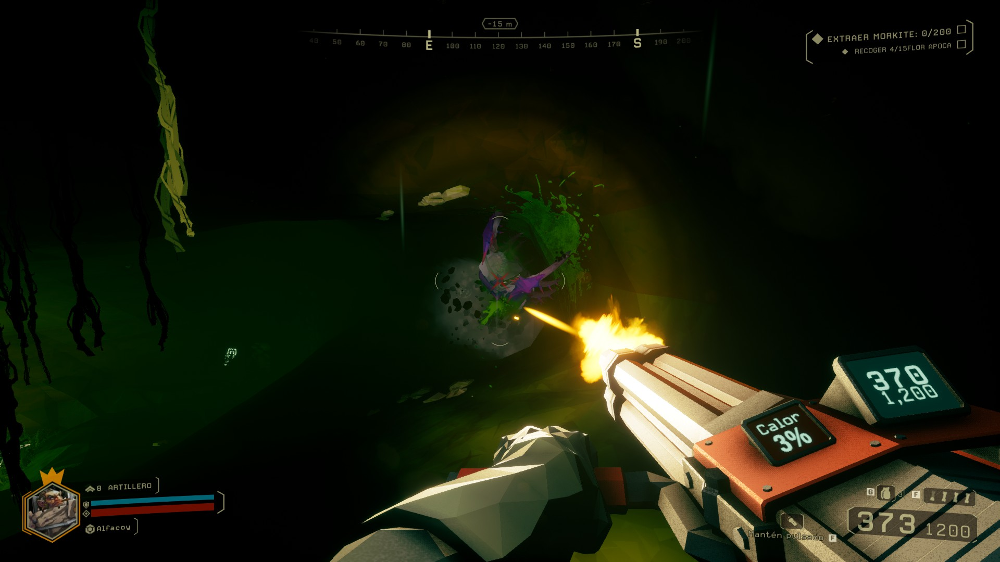
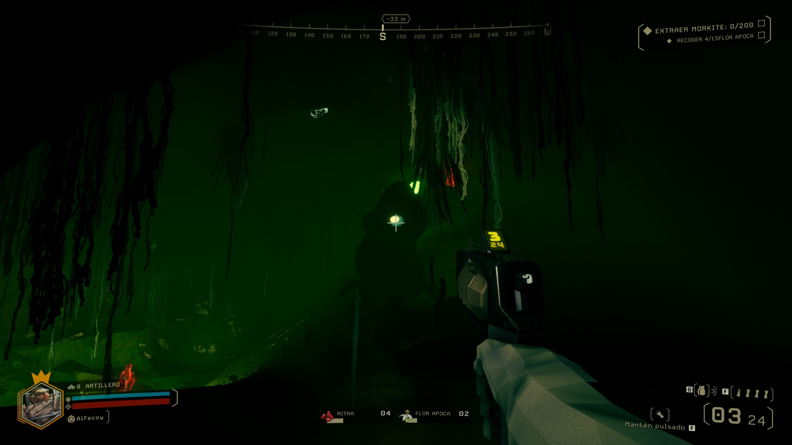

Video: NVIDIA GeForce GTX 460 o AMD Radeon HD 5770.
Disco: 3GB Libres.
Sinopsis
Antes de empezar a redactar quiero dejar por sentado que, con el transcurso del tiempo, dicho análisis va a presentar modificaciones debido a que nos encontramos frente a un título que aún está en early access. Dudo mucho que lo que venga después sea negativo, ya que lo que tenemos aquí es un juego estupendo y muy adictivo.
Primer dia como minero
Se nos va a invitar a explorar nuestra base, desde la cual vamos a poder mejorar nuestro equipamiento, customizar nuestro personaje, elegir las misiones disponibles del catálogo (Estas van cambiando) y echarse un bailecito energizante antes de bajar a la oficina. Realmente esta última parte es muy divertida ya que da pie a las amistades.
ROCK AND STONE BROTHER!
Una vez bajamos del taxi vemos lo que nos depara la oficina en el dia. Nunca van a estar las cosas como las dejamos ya que cuenta con un sistema de generación procedural, realmente son pedazos de laberintos en los que uno puede llegar a perderse fácil si anda distraído o buscando oro cual enano codicioso para mejorar nuestro equipamiento.

Recuerda iluminar tu camino ya que te pueden atacar de cualquier parte.
Tenemos distintos tipos de misiones que realizar por dia laboral, como buscar cierto recurso, eliminar a tal objetivo, etc ... pero no va a ser tan fácil como suena, ya que tenemos todo en contra. Los escenarios son absolutamente oscuros por lo que vamos a tener que usar bengalas en todo momento. ¿Municiones? son totalmente escasas, por lo que buscar el mineral para realizar transacciones va a ser indispensable si queremos llegar a casa sanos y salvos.
Por el momento contamos con un abanico de 4 clases jugables ( Artillero, Explorador, Ingeniero y Excavador), cada una tiene su equipamiento fijo del cual aún no podemos agregar o cambiar nada, más que mejorar lo que se tiene. Seria bueno a futuro tener más variedad de armas, pero para empezar va bien.

El enfrentamiento individual es más sencillo.
No vamos a contar con una gran variedad de enemigos pero sí con una gran cantidad de ellos, los cuales algunos tendrán exoesqueleto haciendo que te cueste más derribarlos. Es cuestión de observarlos y encontrar su punto más débil. Pero ten mucho cuidado en como usas tu munición, recuerda que escasea, a veces un buen golpe con el pico basta para evitar gastarla.
Todo el ambiente es totalmente destruible (al menos hasta donde llegue a minar) y muy inmersivo a lo que es una cueva. Cuenta con una gran cantidad de elementos que le dan vida a cada expedición que hagamos, desde la fauna hasta una flora que cambia dependiendo la zona.

Mira bien al enemigo, puede que tenga puntos débiles.
Una vez terminada la misión es hora de volver a casa, pero no va a ser tan fácil como llegamos ya que nos vendrá una horda de insectos alienígenas interminable, para colmo el taxi que te apura y la cueva es un laberinto. Llegar sin munición o vida a este punto no es muy recomendable, aca es donde un enano pecho peludo tiene que demostrar lo que tiene y enfrentarse a lo que le aparezca por delante (o esquivarlo).
Conclusion Final
Demasiado atractivo al que le guste la fórmula de enanos, survival, fps y minar.
Tiene ambientes muy ricos y bien armados, te hace sentir dentro de la cueva pese a su diseño poligonal.
De momento hay gran cantidad de gente jugándolo por lo que no hay problemas por encontrar partidas online.
Seria bueno que a futuro agreguen más equipamiento para los enanos y enemigos
No note bugs más que un problema con el HUD que se le superpuso datos del navegador de misiones, pero es perdonable al ser early access.